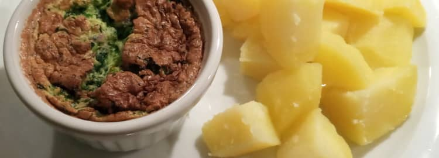

@charak
@charakSpinatsoufflé
Für September hatte ich ein vegetarisches Kochbuch hervorgekramt, um ein paar neue Rezepte auszuprobieren. Gestoßen bin ich dabei auch auf Spinatsoufflé, das mir recht gut geschmeckt hat. Zu dieser schaumigen Eierspeise passen Kartoffeln recht gut.

Zutaten (für 4 Portionen)
3 Esslöffel Crème fraîche
1 Zwiebel
Butter oder Öl
1 Knoblauchzehe
Evtl. Semmelbrösel für die Form
4 Eier
50 g Parmesan (gerieben)
Salz, Pfeffer
1 Prise Muskat
Zubereitung
Frische Spinatblätter waschen und die groben Stiele entfernen. In einem Topf zugedeckt bei mittlerer Hitze zusammenfallen und danach abtropfen lassen. Tiefgekühlten Spinat einfach auftauen.
Spinatblätter mit Crème fraîche im Mixer pürieren; bei Rahmspinat die Crème fraîche nur unterrühren, evtl. etwas weniger als die 3 Esslöffel.
Nun die Zwiebel schälen, fein würfeln und in einem Topf mit 1 Esslöffel Butter oder Öl glasig dünsten. Den Spinat dazugeben, geschälten Knoblauch durch die Presse dazudrücken. Bei schwacher Hitze ca. 5 Minuten dünsten – soll nicht kochen! Dann am besten vom Herd nehmen.
Den Ofen vorheizen auf 200 °C (Umluft: 180 °C).
Eine Auflaufform oder kleine Souffléförmchen vorbereiten: Mit Butter oder Öl einfetten und optional dünn mit Semmelbrösel ausstreuen – so löst sich das Soufflé später gut heraus.
Die Eier trennen. Die Eigelbe in den Spinat rühren. Achtung: Er darf dabei höchstens 65 °C haben, damit die Eier nicht stocken! Den Parmesan ebenfalls in den Spinat rühren, dann würzen mit Salz, Pfeffer und Muskat.
Die Eiweiße steifschlagen und vorsichtig unter den Spinat ziehen. Nun die Masse in die Form/Förmchen füllen. Im Ofen auf mittlerer Schiene etwa 15–20 Minuten backen, bis das Soufflé aufgegangen ist und sich leicht bräunt.
Schnell servieren, sonst sinkt es in sich zusammen. Das Soufflé schmeckt auch kalt, ist dann aber nicht mehr so luftig.
---
Rubrik(en):
#methodik